Last updated: 2024-12-09
Checks: 7 0
Knit directory: dalia/
This reproducible R Markdown analysis was created with workflowr (version 1.7.1). The Checks tab describes the reproducibility checks that were applied when the results were created. The Past versions tab lists the development history.
Great! Since the R Markdown file has been committed to the Git repository, you know the exact version of the code that produced these results.
Great job! The global environment was empty. Objects defined in the global environment can affect the analysis in your R Markdown file in unknown ways. For reproduciblity it’s best to always run the code in an empty environment.
The command set.seed(20240618) was run prior to running
the code in the R Markdown file. Setting a seed ensures that any results
that rely on randomness, e.g. subsampling or permutations, are
reproducible.
Great job! Recording the operating system, R version, and package versions is critical for reproducibility.
Nice! There were no cached chunks for this analysis, so you can be confident that you successfully produced the results during this run.
Great job! Using relative paths to the files within your workflowr project makes it easier to run your code on other machines.
Great! You are using Git for version control. Tracking code development and connecting the code version to the results is critical for reproducibility.
The results in this page were generated with repository version 02cc264. See the Past versions tab to see a history of the changes made to the R Markdown and HTML files.
Note that you need to be careful to ensure that all relevant files for
the analysis have been committed to Git prior to generating the results
(you can use wflow_publish or
wflow_git_commit). workflowr only checks the R Markdown
file, but you know if there are other scripts or data files that it
depends on. Below is the status of the Git repository when the results
were generated:
Untracked files:
Untracked: analysis/figure/
Untracked: analysis/fpsa analysis.Rmd
Untracked: analysis/linear_regression_summary.txt
Untracked: data/age of the control.xlsx
Untracked: data/calculations.xlsx
Untracked: data/data-1 final.xlsx
Untracked: data_with_clusters.csv
Untracked: linear_regression_summary.txt
Untracked: workflow.sh
Unstaged changes:
Deleted: .Rprofile
Deleted: .gitattributes
Deleted: .gitignore
Deleted: KODAMA.svg
Deleted: README.md
Deleted: analysis/DLPFC.Rmd
Deleted: analysis/FPSA.RMD
Deleted: analysis/Giotto.Rmd
Deleted: analysis/Installation.Rmd
Deleted: analysis/Interoperability.Rmd
Deleted: analysis/MERFISH.Rmd
Deleted: analysis/Prostate.Rmd
Deleted: analysis/Seurat.Rmd
Deleted: analysis/Simulation.Rmd
Deleted: analysis/Single-cell.Rmd
Deleted: analysis/SpatialExperiment.Rmd
Deleted: analysis/VisiumHD.Rmd
Modified: analysis/_site.yml
Deleted: analysis/about.Rmd
Modified: analysis/index.Rmd
Deleted: analysis/license.Rmd
Deleted: code/Acinar_Cell_Carcinoma.ipynb
Deleted: code/Adenocarcinoma.ipynb
Deleted: code/Adjacent_normal_section.ipynb
Deleted: code/DLFPC_preprocessing.R
Deleted: code/DLPFC - BANKSY.R
Deleted: code/DLPFC - BASS.R
Deleted: code/DLPFC - BAYESPACE.R
Deleted: code/DLPFC - Nonspatial.R
Deleted: code/DLPFC - PRECAST.R
Deleted: code/DLPFC_comparison.R
Deleted: code/DLPFC_results_analysis.R
Deleted: code/Giotto_download.sh
Deleted: code/Prostate_download.sh
Deleted: code/Prostate_preprocessing.R
Deleted: code/README.md
Deleted: code/VisiumHD-CRC.ipynb
Deleted: code/VisiumHD_CRC_download.sh
Deleted: data/.gitattributes
Deleted: data/DLFPC-Br5292-input.RData
Deleted: data/DLFPC-Br5595-input.RData
Deleted: data/DLFPC-Br8100-input.RData
Deleted: data/Pathology.csv
Deleted: data/Prostate_data.RData
Deleted: data/README.md
Deleted: data/merfish.Rmd
Deleted: data/spots_classification_ALL.csv
Deleted: data/trajectories.RData
Deleted: data/trajectories_VISIUMHD.RData
Deleted: data/vis.R
Deleted: output/BANSKY-results.RData
Deleted: output/BASS-results.RData
Deleted: output/BayesSpace-results.RData
Deleted: output/CRC-image.RData
Deleted: output/CRC-image2.RData
Deleted: output/DLFPC-All.RData
Deleted: output/DLFPC-Br5292.RData
Deleted: output/DLFPC-Br5595.RData
Deleted: output/DLFPC-Br8100.RData
Deleted: output/Figure 1 - boxplot.pdf
Deleted: output/Figure 2 - DLPFC 10.pdf
Deleted: output/KODAMA-results.RData
Deleted: output/MERFISH.RData
Deleted: output/Nonspatial-results.RData
Deleted: output/PRECAST-results.RData
Deleted: output/README.md
Deleted: output/VisiumHD3.RData
Deleted: output/image.RData
Note that any generated files, e.g. HTML, png, CSS, etc., are not included in this status report because it is ok for generated content to have uncommitted changes.
These are the previous versions of the repository in which changes were
made to the R Markdown (analysis/FPSA.Rmd) and HTML
(docs/FPSA.html) files. If you’ve configured a remote Git
repository (see ?wflow_git_remote), click on the hyperlinks
in the table below to view the files as they were in that past version.
| File | Version | Author | Date | Message |
|---|---|---|---|---|
| Rmd | 02cc264 | MO-DJIB-CONSULTING | 2024-12-09 | Start my new project |
| Rmd | 55bf728 | MO-DJIB-CONSULTING | 2024-12-04 | Start my new project |
| Rmd | 9209c32 | MO-DJIB-CONSULTING | 2024-12-04 | Start my new project |
| Rmd | 23370fe | MO-DJIB-CONSULTING | 2024-12-04 | Start my new project |
| Rmd | 1a9edb6 | MO-DJIB-CONSULTING | 2024-12-04 | Start my new project |
# Load necessary libraries
library(readxl)
library(dplyr)
library(ggplot2)
library(corrplot)
library(cluster)
library(factoextra)
library(pheatmap)
library(irlba)
library(Rtsne)
library(tidyr)
library(viridis)
library(heatmaply)
# Loading the data
data_1_final <- read_excel("C:/Users/T0087231/Videos/data-1 final.xlsx")
View(data_1_final)
data_1_final# A tibble: 300 × 17
participants age `duration /years` `family history` `P. size` Treatment
<chr> <dbl> <dbl> <chr> <dbl> <chr>
1 control 84 NA <NA> NA <NA>
2 control 62 NA <NA> NA <NA>
3 control 84 NA <NA> NA <NA>
4 control 75 NA <NA> NA <NA>
5 control 61 NA <NA> NA <NA>
6 control 65 NA <NA> NA <NA>
7 control 59 NA <NA> NA <NA>
8 control 71 NA <NA> NA <NA>
9 control 83 NA <NA> NA <NA>
10 control 76 NA <NA> NA <NA>
# ℹ 290 more rows
# ℹ 11 more variables: `Treatment status` <chr>, Grade <chr>,
# `gleasons score` <chr>, `PSA ng/ml` <dbl>, `fPSA ng/ml` <dbl>,
# `cPSA ng/ml` <dbl>, `fPSA%` <dbl>, `cPSA%` <dbl>, ...15 <lgl>, ACT <dbl>,
# `ACT GREEN` <dbl>str(data_1_final)tibble [300 × 17] (S3: tbl_df/tbl/data.frame)
$ participants : chr [1:300] "control" "control" "control" "control" ...
$ age : num [1:300] 84 62 84 75 61 65 59 71 83 76 ...
$ duration /years : num [1:300] NA NA NA NA NA NA NA NA NA NA ...
$ family history : chr [1:300] NA NA NA NA ...
$ P. size : num [1:300] NA NA NA NA NA NA NA NA NA NA ...
$ Treatment : chr [1:300] NA NA NA NA ...
$ Treatment status: chr [1:300] NA NA NA NA ...
$ Grade : chr [1:300] NA NA NA NA ...
$ gleasons score : chr [1:300] NA NA NA NA ...
$ PSA ng/ml : num [1:300] 2 2.1 1.9 2.3 2.2 2.1 2.1 2.8 2 2.1 ...
$ fPSA ng/ml : num [1:300] 0.52 1.31 0.67 0.44 0.48 0.53 0.69 0.53 0.71 1.51 ...
$ cPSA ng/ml : num [1:300] 1.48 0.79 1.23 1.86 1.72 1.57 1.41 2.27 1.29 0.59 ...
$ fPSA% : num [1:300] 26 62.4 35.3 19.1 21.8 ...
$ cPSA% : num [1:300] 74 37.6 64.7 80.9 78.2 ...
$ ...15 : logi [1:300] NA NA NA NA NA NA ...
$ ACT : num [1:300] 25 27.3 24 22 27.3 ...
$ ACT GREEN : num [1:300] 250 273 240 220 273 ...head(data_1_final)# A tibble: 6 × 17
participants age `duration /years` `family history` `P. size` Treatment
<chr> <dbl> <dbl> <chr> <dbl> <chr>
1 control 84 NA <NA> NA <NA>
2 control 62 NA <NA> NA <NA>
3 control 84 NA <NA> NA <NA>
4 control 75 NA <NA> NA <NA>
5 control 61 NA <NA> NA <NA>
6 control 65 NA <NA> NA <NA>
# ℹ 11 more variables: `Treatment status` <chr>, Grade <chr>,
# `gleasons score` <chr>, `PSA ng/ml` <dbl>, `fPSA ng/ml` <dbl>,
# `cPSA ng/ml` <dbl>, `fPSA%` <dbl>, `cPSA%` <dbl>, ...15 <lgl>, ACT <dbl>,
# `ACT GREEN` <dbl># 1. Compute the correlation matrix
selected_columns <- data_1_final %>% select(`fPSA ng/ml`, age, `P. size`, ACT)
cor_matrix <- cor(selected_columns, use = "pairwise.complete.obs")
# Display the correlation matrix
print(cor_matrix) fPSA ng/ml age P. size ACT
fPSA ng/ml 1.00000000 -0.01913402 0.16218624 0.08371876
age -0.01913402 1.00000000 -0.01638971 0.10674558
P. size 0.16218624 -0.01638971 1.00000000 -0.05531594
ACT 0.08371876 0.10674558 -0.05531594 1.00000000# Visualize the correlation matrix with coefficients
corrplot(
cor_matrix,
method = "circle",
type = "upper",
title = "Correlation Matrix: FPSA vs Clinical Variables",
tl.cex = 0.8,
mar = c(0, 0, 2, 0),
addCoef.col = "black" # Show coefficients on the plot
)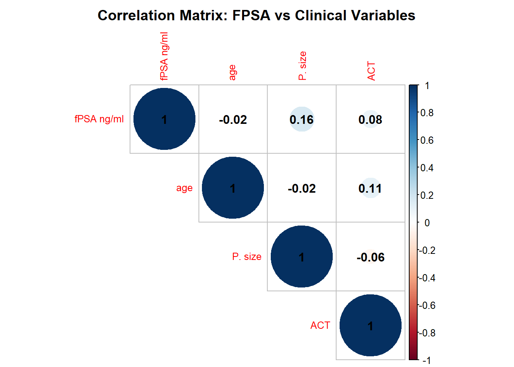
For each variable (age, prostate size, and ACT), we perform linear regression to assess their relationship with FPSA. Coefficients and p-values are extracted and interpreted.
# 2. Linear Regression: FPSA ~ Age
lm_fPSA_age <- lm(`fPSA ng/ml` ~ age, data = data_1_final)
summary(lm_fPSA_age)
Call:
lm(formula = `fPSA ng/ml` ~ age, data = data_1_final)
Residuals:
Min 1Q Median 3Q Max
-2.2449 -1.7787 -0.9883 0.8212 11.0289
Coefficients:
Estimate Std. Error t value Pr(>|t|)
(Intercept) 2.867713 0.925114 3.10 0.00212 **
age -0.004362 0.013203 -0.33 0.74136
---
Signif. codes: 0 '***' 0.001 '**' 0.01 '*' 0.05 '.' 0.1 ' ' 1
Residual standard error: 2.523 on 298 degrees of freedom
Multiple R-squared: 0.0003661, Adjusted R-squared: -0.002988
F-statistic: 0.1091 on 1 and 298 DF, p-value: 0.7414lm_fPSA_age
Call:
lm(formula = `fPSA ng/ml` ~ age, data = data_1_final)
Coefficients:
(Intercept) age
2.867713 -0.004362 # Visualization: FPSA vs Age
ggplot(data_1_final, aes(x = age, y = `fPSA ng/ml`)) +
geom_point(alpha = 0.6, color = "blue") +
geom_smooth(method = "lm", color = "red") +
labs(
title = "Relationship Between FPSA and Age",
x = "Age (years)",
y = "FPSA (ng/ml)"
) +
theme_minimal()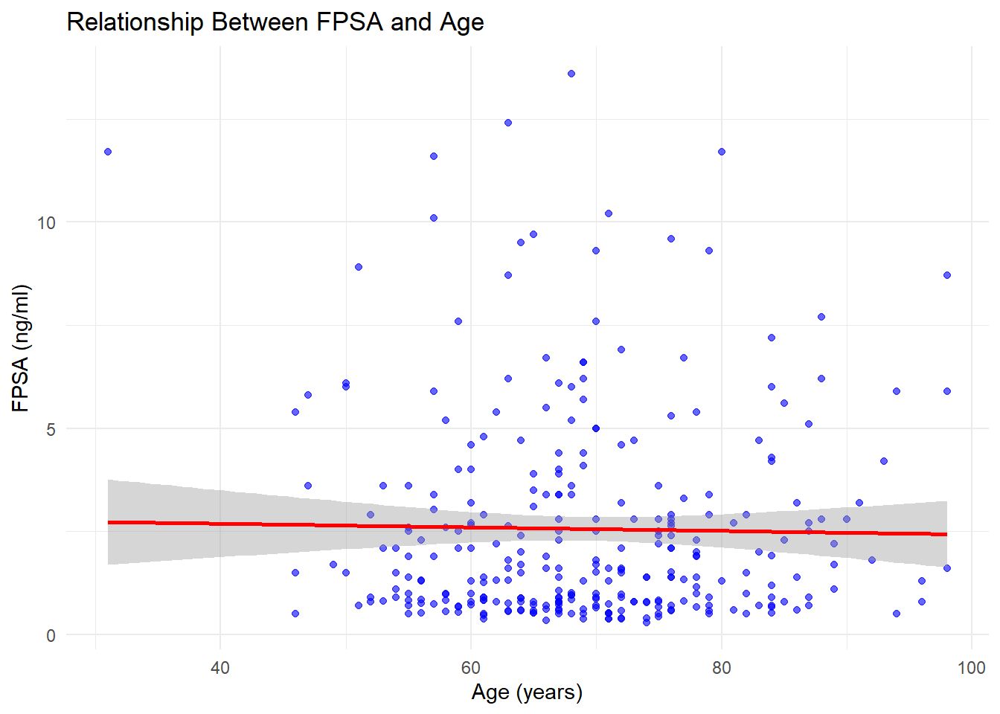
# 3. Linear Regression: FPSA ~ Prostate Size
lm_fPSA_Psize <- lm(`fPSA ng/ml` ~ `P. size`, data = data_1_final)
summary(lm_fPSA_Psize)
Call:
lm(formula = `fPSA ng/ml` ~ `P. size`, data = data_1_final)
Residuals:
Min 1Q Median 3Q Max
-3.4315 -1.9342 -0.8985 1.1902 9.3604
Coefficients:
Estimate Std. Error t value Pr(>|t|)
(Intercept) 2.443958 0.454506 5.377 2.12e-07 ***
`P. size` 0.021635 0.009354 2.313 0.0218 *
---
Signif. codes: 0 '***' 0.001 '**' 0.01 '*' 0.05 '.' 0.1 ' ' 1
Residual standard error: 2.672 on 198 degrees of freedom
(100 observations deleted due to missingness)
Multiple R-squared: 0.0263, Adjusted R-squared: 0.02139
F-statistic: 5.349 on 1 and 198 DF, p-value: 0.02176lm_fPSA_Psize
Call:
lm(formula = `fPSA ng/ml` ~ `P. size`, data = data_1_final)
Coefficients:
(Intercept) `P. size`
2.44396 0.02163 # Visualization: FPSA vs Prostate Size
ggplot(data_1_final, aes(x = `P. size`, y = `fPSA ng/ml`)) +
geom_point(alpha = 0.6, color = "green") +
geom_smooth(method = "lm", color = "red") +
labs(
title = "Relationship Between FPSA and Prostate Size",
x = "Prostate Size (cm³)",
y = "FPSA (ng/ml)"
) +
theme_minimal()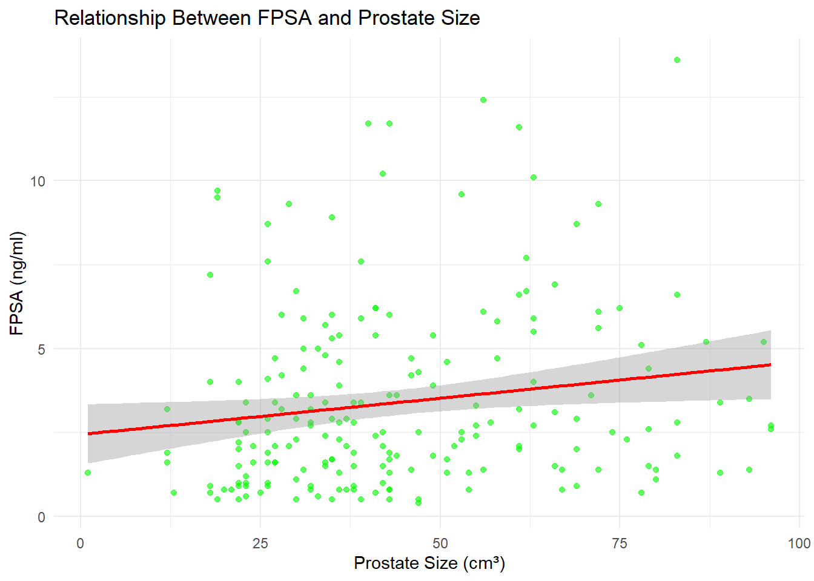
# 4. Linear Regression: FPSA ~ ACT
lm_fPSA_ACT <- lm(`fPSA ng/ml` ~ ACT, data = data_1_final)
summary(lm_fPSA_ACT)
Call:
lm(formula = `fPSA ng/ml` ~ ACT, data = data_1_final)
Residuals:
Min 1Q Median 3Q Max
-2.4895 -1.7141 -1.0250 0.6831 11.2272
Coefficients:
Estimate Std. Error t value Pr(>|t|)
(Intercept) 2.203667 0.288890 7.628 3.23e-13 ***
ACT 0.011151 0.007689 1.450 0.148
---
Signif. codes: 0 '***' 0.001 '**' 0.01 '*' 0.05 '.' 0.1 ' ' 1
Residual standard error: 2.514 on 298 degrees of freedom
Multiple R-squared: 0.007009, Adjusted R-squared: 0.003677
F-statistic: 2.103 on 1 and 298 DF, p-value: 0.148lm_fPSA_ACT
Call:
lm(formula = `fPSA ng/ml` ~ ACT, data = data_1_final)
Coefficients:
(Intercept) ACT
2.20367 0.01115 # Visualization: FPSA vs ACT
ggplot(data_1_final, aes(x = ACT, y = `fPSA ng/ml`)) +
geom_point(alpha = 0.6, color = "purple") +
geom_smooth(method = "lm", color = "red") +
labs(
title = "Relationship Between FPSA and ACT",
x = "ACT (clinical score or measure)",
y = "FPSA (ng/ml)"
) +
theme_minimal()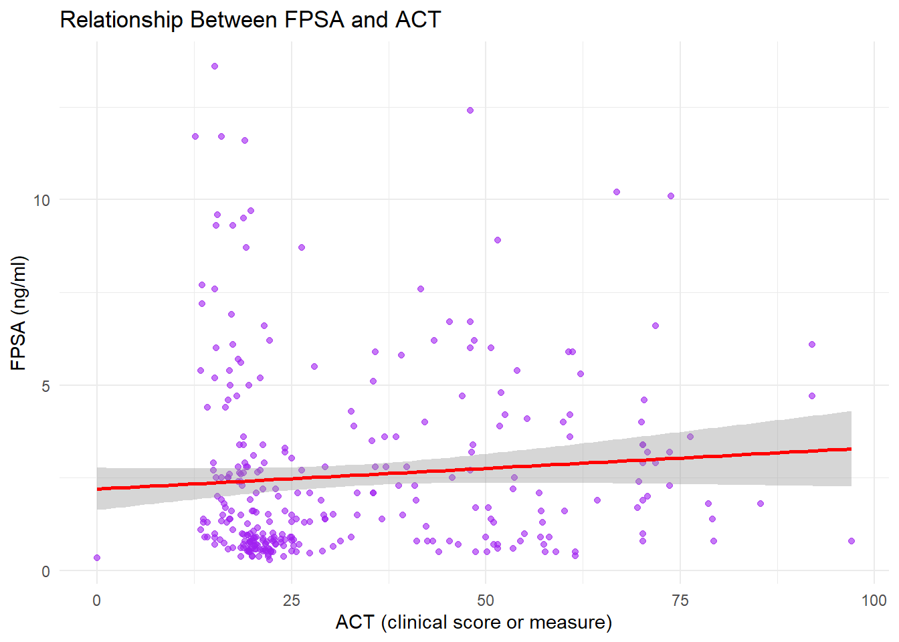 ## Additional Statistical Tests
For further insights, we can include normality tests and non-parametric comparisons if data do not meet normality assumptions.
# Shapiro-Wilk test for FPSA normality
shapiro.test(data_1_final$`fPSA ng/ml`)
Shapiro-Wilk normality test
data: data_1_final$`fPSA ng/ml`
W = 0.78165, p-value < 2.2e-16# If non-normal, use a non-parametric correlation test (Spearman)
cor_spearman <- cor.test(data_1_final$`fPSA ng/ml`, data_1_final$age, method = "spearman")
print(cor_spearman)
Spearman's rank correlation rho
data: data_1_final$`fPSA ng/ml` and data_1_final$age
S = 4433607, p-value = 0.7993
alternative hypothesis: true rho is not equal to 0
sample estimates:
rho
0.01474304 # Export Results
# Save regression summaries to a text file
sink("linear_regression_summary.txt")
cat("FPSA ~ Age:\n")FPSA ~ Age:print(summary(lm_fPSA_age))
Call:
lm(formula = `fPSA ng/ml` ~ age, data = data_1_final)
Residuals:
Min 1Q Median 3Q Max
-2.2449 -1.7787 -0.9883 0.8212 11.0289
Coefficients:
Estimate Std. Error t value Pr(>|t|)
(Intercept) 2.867713 0.925114 3.10 0.00212 **
age -0.004362 0.013203 -0.33 0.74136
---
Signif. codes: 0 '***' 0.001 '**' 0.01 '*' 0.05 '.' 0.1 ' ' 1
Residual standard error: 2.523 on 298 degrees of freedom
Multiple R-squared: 0.0003661, Adjusted R-squared: -0.002988
F-statistic: 0.1091 on 1 and 298 DF, p-value: 0.7414cat("\nFPSA ~ Prostate Size:\n")
FPSA ~ Prostate Size:print(summary(lm_fPSA_Psize))
Call:
lm(formula = `fPSA ng/ml` ~ `P. size`, data = data_1_final)
Residuals:
Min 1Q Median 3Q Max
-3.4315 -1.9342 -0.8985 1.1902 9.3604
Coefficients:
Estimate Std. Error t value Pr(>|t|)
(Intercept) 2.443958 0.454506 5.377 2.12e-07 ***
`P. size` 0.021635 0.009354 2.313 0.0218 *
---
Signif. codes: 0 '***' 0.001 '**' 0.01 '*' 0.05 '.' 0.1 ' ' 1
Residual standard error: 2.672 on 198 degrees of freedom
(100 observations deleted due to missingness)
Multiple R-squared: 0.0263, Adjusted R-squared: 0.02139
F-statistic: 5.349 on 1 and 198 DF, p-value: 0.02176cat("\nFPSA ~ ACT:\n")
FPSA ~ ACT:print(summary(lm_fPSA_ACT))
Call:
lm(formula = `fPSA ng/ml` ~ ACT, data = data_1_final)
Residuals:
Min 1Q Median 3Q Max
-2.4895 -1.7141 -1.0250 0.6831 11.2272
Coefficients:
Estimate Std. Error t value Pr(>|t|)
(Intercept) 2.203667 0.288890 7.628 3.23e-13 ***
ACT 0.011151 0.007689 1.450 0.148
---
Signif. codes: 0 '***' 0.001 '**' 0.01 '*' 0.05 '.' 0.1 ' ' 1
Residual standard error: 2.514 on 298 degrees of freedom
Multiple R-squared: 0.007009, Adjusted R-squared: 0.003677
F-statistic: 2.103 on 1 and 298 DF, p-value: 0.148sink()Let’s add a specific analysis for the cancer group based on treatment, grade, and Gleason score, using robust statistical tests.
If the data is not normally distributed, the Kruskal-Wallis test (a non-parametric equivalent of ANOVA) will help assess differences in fPSA between categorical variables like Treatment, Grade, and Gleason Score. This is particularly useful if the assumption of normality is violated.
cancer_data <- data_1_final %>% filter(participants == "P .cancer")
# Kruskal-Wallis test for fPSA vs Treatment, Grade, and Gleason Score
kruskal_grade <- kruskal.test(`fPSA ng/ml` ~ Grade, data = cancer_data)
kruskal_gleason <- kruskal.test(`fPSA ng/ml` ~ `gleasons score`, data = cancer_data)
# Display the Kruskal-Wallis test results
kruskal_grade
Kruskal-Wallis rank sum test
data: fPSA ng/ml by Grade
Kruskal-Wallis chi-squared = 2.497, df = 4, p-value = 0.6452kruskal_gleason
Kruskal-Wallis rank sum test
data: fPSA ng/ml by gleasons score
Kruskal-Wallis chi-squared = 1.6444, df = 3, p-value = 0.6494A T-test will be useful for comparing fPSA between two groups (e.g., comparing two types of treatments or grades).
cancer_data$gleason_score_numeric <- as.numeric(sub(".*=(\\d+)", "\\1", cancer_data$`gleasons score`))
cancer_data$gleason_group <- ifelse(cancer_data$gleason_score_numeric <= 6, "Low", "High")
t_test_gleason <- t.test(`fPSA ng/ml` ~ gleason_group, data = cancer_data)
t_test_gleason
Welch Two Sample t-test
data: fPSA ng/ml by gleason_group
t = -1.2267, df = 7.4084, p-value = 0.2575
alternative hypothesis: true difference in means between group High and group Low is not equal to 0
95 percent confidence interval:
-4.988171 1.555562
sample estimates:
mean in group High mean in group Low
2.833696 4.550000 To understand the variance in the dataset and explore how the variables (including fPSA, Age, Treatment, Grade, etc.) contribute to the data structure, we can perform Principal Component Analysis (PCA). PCA is often used in bioinformatics to reduce dimensionality and identify patterns.
# PCA analysis on numeric variables (including fPSA, Age, Gleason Score, etc.)
# Filter cancer data for the "P.cancer" group
cancer_data <- data_1_final %>% filter(participants == "P .cancer")
# Check the data types of the columns in the PCA data
sapply(cancer_data, class) participants age duration /years family history
"character" "numeric" "numeric" "character"
P. size Treatment Treatment status Grade
"numeric" "character" "character" "character"
gleasons score PSA ng/ml fPSA ng/ml cPSA ng/ml
"character" "numeric" "numeric" "numeric"
fPSA% cPSA% ...15 ACT
"numeric" "numeric" "logical" "numeric"
ACT GREEN
"numeric" # Convert 'gleasons score' to numeric by extracting the score
cancer_data$gleason_score_numeric <- as.numeric(sub(".*=(\\d+)", "\\1", cancer_data$`gleasons score`))
# Check if 'P. size' is numeric, otherwise convert it
cancer_data$P_size_numeric <- as.numeric(cancer_data$`P. size`)
# Ensure all other columns are numeric
cancer_data$age <- as.numeric(cancer_data$age)
# Remove non-numeric columns from the dataset if necessary
pca_data <- cancer_data %>% select(`fPSA ng/ml`, age, gleason_score_numeric, P_size_numeric, ACT)
# Verify the data types again
sapply(pca_data, class) fPSA ng/ml age gleason_score_numeric
"numeric" "numeric" "numeric"
P_size_numeric ACT
"numeric" "numeric" # Perform PCA on the cleaned and converted data
pca_result <- prcomp(pca_data, center = TRUE, scale. = TRUE)
# Display PCA results
summary(pca_result)Importance of components:
PC1 PC2 PC3 PC4 PC5
Standard deviation 1.2634 1.0277 0.9254 0.8915 0.8345
Proportion of Variance 0.3192 0.2112 0.1713 0.1590 0.1393
Cumulative Proportion 0.3192 0.5305 0.7017 0.8607 1.0000# Visualize PCA (biplot)
biplot(pca_result, main = "PCA of fPSA and Clinical Factors")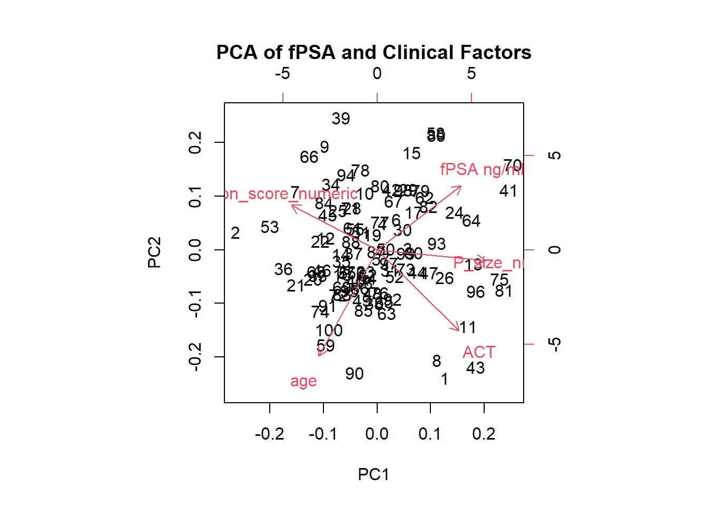
To better understand relationships between multiple variables (such as fPSA, Age, Gleason Score, ACT, etc.), a correlation matrix with a heatmap will help visualize how strongly the variables are correlated with each other.
# Ensure all columns are numeric, converting where necessary
cancer_data <- cancer_data %>%
mutate(
# Convert 'gleasons score' to numeric by extracting the numeric part
gleason_score_numeric = as.numeric(sub(".*=(\\d+)", "\\1", `gleasons score`)),
# Ensure 'P. size' is numeric
P_size_numeric = as.numeric(`P. size`),
# Ensure 'age' is numeric (if not already)
age = as.numeric(age)
)
# Use the numeric columns for correlation matrix
cor_matrix_extended <- cancer_data %>%
select(`fPSA ng/ml`, age, gleason_score_numeric, P_size_numeric, ACT) %>%
cor(use = "pairwise.complete.obs")
# Check the correlation matrix
print(cor_matrix_extended) fPSA ng/ml age gleason_score_numeric
fPSA ng/ml 1.00000000 -0.16581480 -0.14253087
age -0.16581480 1.00000000 0.04346348
gleason_score_numeric -0.14253087 0.04346348 1.00000000
P_size_numeric 0.20727293 -0.14888695 -0.20756844
ACT 0.06800046 -0.01405676 -0.17346135
P_size_numeric ACT
fPSA ng/ml 0.2072729 0.06800046
age -0.1488869 -0.01405676
gleason_score_numeric -0.2075684 -0.17346135
P_size_numeric 1.0000000 0.25292238
ACT 0.2529224 1.00000000# Heatmap of the correlation matrix
library(heatmaply)
heatmaply(cor_matrix_extended, main = "Correlation Matrix of Clinical V")Another useful visualization technique is a heatmap that highlights the relationships between clinical factors and fPSA levels across different Treatment and Grade groups. This can help identify trends or anomalies.
# Creating a heatmap for fPSA across different Treatment and Grade categories
library(tidyr)
# Prepare the data
cancer_data$Treatment[is.na(cancer_data$Treatment)] <- "Unknown"
cancer_data_clean <- cancer_data %>%
filter(!is.na(Treatment))
heatmap_data <- cancer_data_clean %>%
group_by(Treatment, Grade) %>%
summarise(mean_fPSA = mean(`fPSA ng/ml`, na.rm = TRUE)) %>%
pivot_wider(names_from = Grade, values_from = mean_fPSA)
# Reshape the data back to long format
heatmap_data_long <- heatmap_data %>%
pivot_longer(cols = starts_with("grade"),
names_to = "Grade",
values_to = "mean_fPSA")
heatmap_data_long# A tibble: 5 × 3
# Groups: Treatment [1]
Treatment Grade mean_fPSA
<chr> <chr> <dbl>
1 Unknown grade 1 4.55
2 Unknown grade 2 3.27
3 Unknown grade 3 2.92
4 Unknown grade 4 2.72
5 Unknown grade 5 2.01# Plotting the heatmap
ggplot(heatmap_data_long, aes(x = Grade, y = Treatment, fill = mean_fPSA)) +
geom_tile() +
scale_fill_viridis() +
theme_minimal() +
labs(title = "fPSA Levels by Treatment and Grade", x = "Grade", y = "Treatment")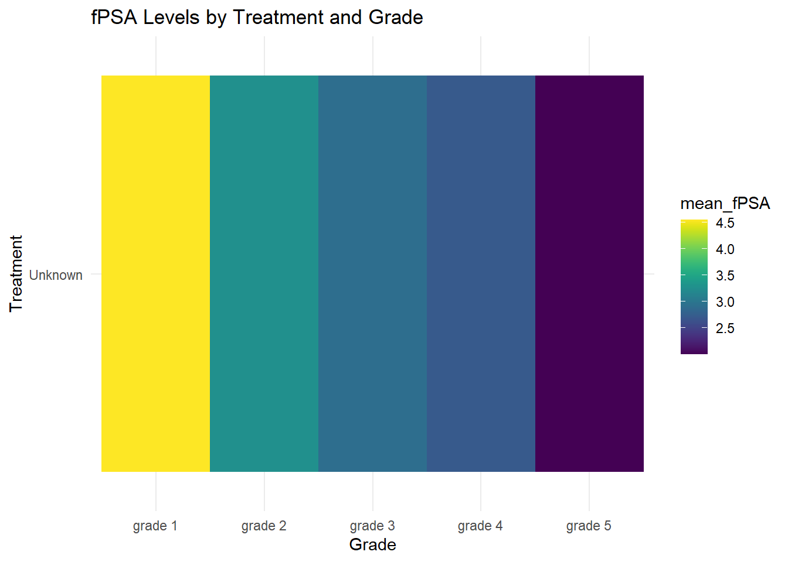
Before applying statistical tests, it is essential to check if the data follow a normal distribution. The Shapiro-Wilk test is appropriate for this.
# Shapiro-Wilk normality test for fPSA in the cancer group
shapiro_test <- shapiro.test(cancer_data$`fPSA ng/ml`)
print(shapiro_test)
Shapiro-Wilk normality test
data: cancer_data$`fPSA ng/ml`
W = 0.86388, p-value = 4.003e-08If the normality test fails (p-value < 0.05), it is better to use non-parametric tests such as Kruskal-Wallis (for factors with more than two levels) and Mann-Whitney U test (for comparisons between two groups).
#Kruskal-Wallis Test
# Kruskal-Wallis test for fPSA vs Grade
kruskal_test_grade <- kruskal.test(`fPSA ng/ml` ~ Grade, data = cancer_data)
print(kruskal_test_grade)
Kruskal-Wallis rank sum test
data: fPSA ng/ml by Grade
Kruskal-Wallis chi-squared = 2.497, df = 4, p-value = 0.6452# Kruskal-Wallis test for fPSA vs Gleason Score
kruskal_test_gleason <- kruskal.test(`fPSA ng/ml` ~ `gleasons score`, data = cancer_data)
print(kruskal_test_gleason)
Kruskal-Wallis rank sum test
data: fPSA ng/ml by gleasons score
Kruskal-Wallis chi-squared = 1.6444, df = 3, p-value = 0.6494These non-parametric tests allow us to analyze whether the distributions of fPSA differ significantly across groups.
Multiple linear regression allows us to model the relationship between several independent variables and the dependent variable fPSA.
# Multiple linear regression for fPSA based on Treatment, Grade, and Gleason Score
lm_fPSA <- lm(`fPSA ng/ml` ~ Grade + `gleasons score`, data = cancer_data)
summary(lm_fPSA)
Call:
lm(formula = `fPSA ng/ml` ~ Grade + `gleasons score`, data = cancer_data)
Residuals:
Min 1Q Median 3Q Max
-4.0500 -1.9155 -0.7125 1.3345 7.8500
Coefficients: (3 not defined because of singularities)
Estimate Std. Error t value Pr(>|t|)
(Intercept) 4.5500 0.8524 5.338 6.38e-07 ***
Gradegrade 2 -1.2804 0.9896 -1.294 0.1988
Gradegrade 3 -1.6348 0.9501 -1.721 0.0886 .
Gradegrade 4 -1.8333 0.9842 -1.863 0.0656 .
Gradegrade 5 -2.5417 1.1004 -2.310 0.0231 *
`gleasons score`3+4=7 NA NA NA NA
`gleasons score`4+3=7 NA NA NA NA
`gleasons score`4+4=8 NA NA NA NA
---
Signif. codes: 0 '***' 0.001 '**' 0.01 '*' 0.05 '.' 0.1 ' ' 1
Residual standard error: 2.411 on 95 degrees of freedom
Multiple R-squared: 0.05924, Adjusted R-squared: 0.01963
F-statistic: 1.496 on 4 and 95 DF, p-value: 0.2097This helps identify the relative impact of each factor ( Grade, Gleason Score) on fPSA levels.
To explore the complex relationships between PSA, fPSA, and cPSA, as well as their connection to factors such as age and group, we will use advanced statistical methods. These methods provide a better understanding of interactions between multiple variables simultaneously.
MANOVA allows us to simultaneously analyze how the factors age, ACT, P.size, and group affect multiple dependent variables (e.g., PSA, fPSA, cPSA). This can help us assess if these factors jointly influence the biomarkers across different groups.
# MANOVA analysis: comparing age, ACT, P.size, and group
manova_result <- manova(cbind(`PSA ng/ml`, `fPSA ng/ml`, `cPSA ng/ml`) ~ age + ACT + `P. size` + participants, data = data_1_final)
manova_result Call:
manova(cbind(`PSA ng/ml`, `fPSA ng/ml`, `cPSA ng/ml`) ~ age +
ACT + `P. size` + participants, data = data_1_final)
Terms:
age ACT `P. size` participants Residuals
PSA ng/ml 2002.83 8469.97 0.00 3347.76 73015.78
fPSA ng/ml 10.70 28.62 34.17 0.85 1377.49
cPSA ng/ml 1720.72 9483.38 34.09 3455.19 69099.00
Deg. of Freedom 1 1 1 1 195
Residual standard errors: 19.35045 2.657832 18.82429
Estimated effects may be unbalanced
100 observations deleted due to missingnessMultiple regression models can assess the individual effect of age, ACT, and P.size on each of the biomarkers (PSA, fPSA, cPSA) separately, while accounting for the interaction with group.
# Multiple linear regression models for each PSA variable
lm_psa <- lm(`PSA ng/ml` ~ age + ACT + `P. size` + participants, data = data_1_final)
lm_fpsa <- lm(`fPSA ng/ml` ~ age + ACT + `P. size` + participants, data = data_1_final)
lm_cpsa <- lm(`cPSA ng/ml` ~ age + ACT + `P. size` + participants, data = data_1_final)
# Summary of regression results for each biomarker
summary(lm_psa)
Call:
lm(formula = `PSA ng/ml` ~ age + ACT + `P. size` + participants,
data = data_1_final)
Residuals:
Min 1Q Median 3Q Max
-31.499 -13.485 -2.642 6.572 66.687
Coefficients:
Estimate Std. Error t value Pr(>|t|)
(Intercept) 32.701662 8.854218 3.693 0.000287 ***
age -0.310141 0.112786 -2.750 0.006524 **
ACT 0.004661 0.122742 0.038 0.969745
`P. size` 0.056778 0.070457 0.806 0.421316
participantsP .cancer 15.535515 5.195647 2.990 0.003148 **
---
Signif. codes: 0 '***' 0.001 '**' 0.01 '*' 0.05 '.' 0.1 ' ' 1
Residual standard error: 19.35 on 195 degrees of freedom
(100 observations deleted due to missingness)
Multiple R-squared: 0.1592, Adjusted R-squared: 0.1419
F-statistic: 9.227 on 4 and 195 DF, p-value: 7.545e-07summary(lm_fpsa)
Call:
lm(formula = `fPSA ng/ml` ~ age + ACT + `P. size` + participants,
data = data_1_final)
Residuals:
Min 1Q Median 3Q Max
-3.5558 -1.9068 -0.9035 1.4310 9.0024
Coefficients:
Estimate Std. Error t value Pr(>|t|)
(Intercept) 4.247626 1.216149 3.493 0.000592 ***
age -0.016038 0.015491 -1.035 0.301815
ACT -0.012243 0.016859 -0.726 0.468575
`P. size` 0.019594 0.009678 2.025 0.044263 *
participantsP .cancer -0.247311 0.713635 -0.347 0.729302
---
Signif. codes: 0 '***' 0.001 '**' 0.01 '*' 0.05 '.' 0.1 ' ' 1
Residual standard error: 2.658 on 195 degrees of freedom
(100 observations deleted due to missingness)
Multiple R-squared: 0.05121, Adjusted R-squared: 0.03175
F-statistic: 2.631 on 4 and 195 DF, p-value: 0.03563summary(lm_cpsa)
Call:
lm(formula = `cPSA ng/ml` ~ age + ACT + `P. size` + participants,
data = data_1_final)
Residuals:
Min 1Q Median 3Q Max
-28.647 -13.145 -3.353 5.465 66.625
Coefficients:
Estimate Std. Error t value Pr(>|t|)
(Intercept) 28.45404 8.61346 3.303 0.00114 **
age -0.29410 0.10972 -2.681 0.00798 **
ACT 0.01690 0.11940 0.142 0.88756
`P. size` 0.03718 0.06854 0.542 0.58810
participantsP .cancer 15.78283 5.05437 3.123 0.00207 **
---
Signif. codes: 0 '***' 0.001 '**' 0.01 '*' 0.05 '.' 0.1 ' ' 1
Residual standard error: 18.82 on 195 degrees of freedom
(100 observations deleted due to missingness)
Multiple R-squared: 0.1754, Adjusted R-squared: 0.1584
F-statistic: 10.37 on 4 and 195 DF, p-value: 1.241e-07We can compare how age, ACT, and P.size differ between Cancer and Non-Cancer groups using ANOVA (for multiple groups) or T-tests (for two groups).
#a. T-test (If comparing two groups like Cancer vs Non-Cancer
# T-test to compare age, ACT, and P.size between the Cancer and Non-Cancer groups
# Create a new factor for Cancer vs Non-Cancer
data_1_final$Cancer_Group <- ifelse(data_1_final$participants == "P .cancer", "Cancer", "Non-Cancer")
# T-test to compare age between Cancer and Non-Cancer groups
t_test_age <- t.test(age ~ Cancer_Group, data = data_1_final)
# T-test for ACT between Cancer and Non-Cancer groups
t_test_ACT <- t.test(ACT ~ Cancer_Group, data = data_1_final)
# T-test for P.size between Cancer and Non-Cancer groups
t_test_Psize <- t.test(`P. size` ~ Cancer_Group, data = data_1_final)
# Display results
t_test_age
Welch Two Sample t-test
data: age by Cancer_Group
t = 1.888, df = 168.86, p-value = 0.06074
alternative hypothesis: true difference in means between group Cancer and group Non-Cancer is not equal to 0
95 percent confidence interval:
-0.1233874 5.5333874
sample estimates:
mean in group Cancer mean in group Non-Cancer
71.000 68.295 t_test_ACT
Welch Two Sample t-test
data: ACT by Cancer_Group
t = 22.929, df = 114.23, p-value < 2.2e-16
alternative hypothesis: true difference in means between group Cancer and group Non-Cancer is not equal to 0
95 percent confidence interval:
31.58105 37.55394
sample estimates:
mean in group Cancer mean in group Non-Cancer
55.52833 20.96084 t_test_Psize
Welch Two Sample t-test
data: P. size by Cancer_Group
t = -2.7765, df = 176.83, p-value = 0.006087
alternative hypothesis: true difference in means between group Cancer and group Non-Cancer is not equal to 0
95 percent confidence interval:
-13.378269 -2.261731
sample estimates:
mean in group Cancer mean in group Non-Cancer
40.28 48.10 #b. ANOVA (If comparing more than two groups):
# ANOVA to compare age, ACT, and P.size across multiple groups
anova_age <- aov(age ~ Cancer_Group, data = data_1_final)
anova_act <- aov(ACT ~ Cancer_Group, data = data_1_final)
anova_psize <- aov(`P. size` ~ Cancer_Group, data = data_1_final)
# Display ANOVA results
summary(anova_age) Df Sum Sq Mean Sq F value Pr(>F)
Cancer_Group 1 488 487.8 4.035 0.0455 *
Residuals 298 36028 120.9
---
Signif. codes: 0 '***' 0.001 '**' 0.01 '*' 0.05 '.' 0.1 ' ' 1summary(anova_act) Df Sum Sq Mean Sq F value Pr(>F)
Cancer_Group 1 79661 79661 870.1 <2e-16 ***
Residuals 298 27284 92
---
Signif. codes: 0 '***' 0.001 '**' 0.01 '*' 0.05 '.' 0.1 ' ' 1summary(anova_psize) Df Sum Sq Mean Sq F value Pr(>F)
Cancer_Group 1 3058 3057.6 7.709 0.00602 **
Residuals 198 78533 396.6
---
Signif. codes: 0 '***' 0.001 '**' 0.01 '*' 0.05 '.' 0.1 ' ' 1
100 observations deleted due to missingnessTo assess the strength and direction of the relationship between age, ACT, P.size, and PSA, fPSA, and cPSA, we can perform correlation analysis.
# Calculate correlation matrix between age, ACT, P.size, and biomarkers
cor_matrix <- cor(data_1_final[, c("age", "ACT", "P. size", "PSA ng/ml", "fPSA ng/ml", "cPSA ng/ml")], use = "complete.obs")
# Display correlation matrix
cor_matrix age ACT P. size PSA ng/ml fPSA ng/ml
age 1.00000000 0.07740149 -0.01638971 -0.15186981 -0.08585924
ACT 0.07740149 1.00000000 -0.05531594 0.29962116 -0.14663917
P. size -0.01638971 -0.05531594 1.00000000 -0.01441754 0.16218624
PSA ng/ml -0.15186981 0.29962116 -0.01441754 1.00000000 0.20020129
fPSA ng/ml -0.08585924 -0.14663917 0.16218624 0.20020129 1.00000000
cPSA ng/ml -0.14330201 0.32431706 -0.03602576 0.99164904 0.07217457
cPSA ng/ml
age -0.14330201
ACT 0.32431706
P. size -0.03602576
PSA ng/ml 0.99164904
fPSA ng/ml 0.07217457
cPSA ng/ml 1.00000000To visually compare the differences in age, ACT, and P.size across Cancer and Non-Cancer groups, boxplots and scatter plots can be helpful.
# Boxplot of age, ACT, and P.size by group
library(ggplot2)
ggplot(data_1_final, aes(x = participants, y = age, fill = participants)) +
geom_boxplot() +
labs(title = "Age by Group", x = "Group", y = "Age")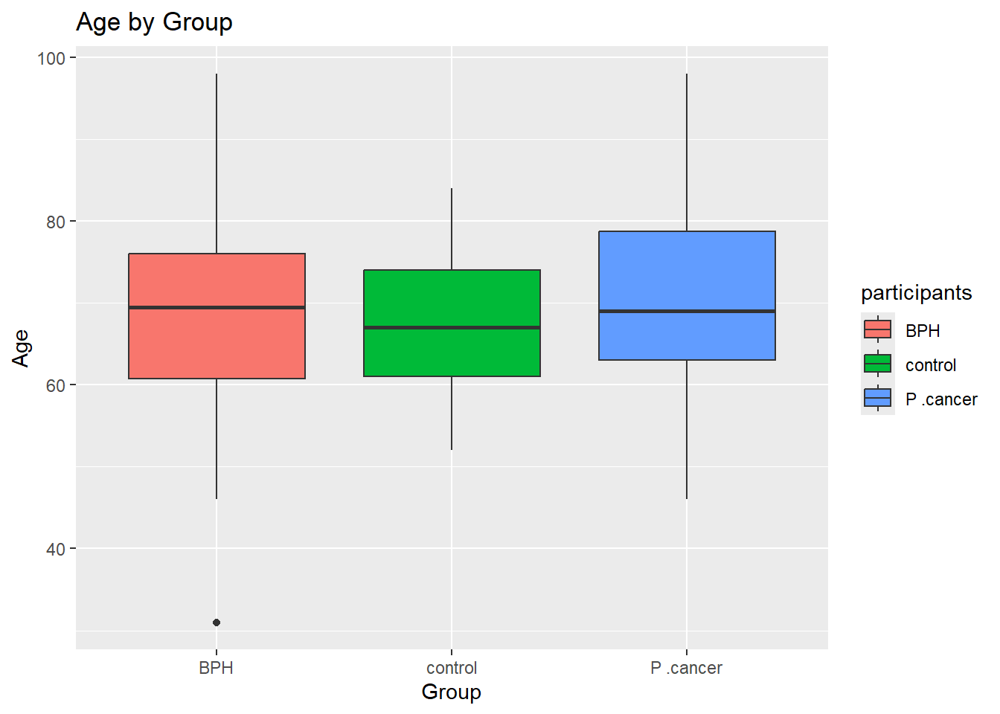
ggplot(data_1_final, aes(x = participants, y = ACT, fill = participants)) +
geom_boxplot() +
labs(title = "ACT by Group", x = "participants", y = "ACT")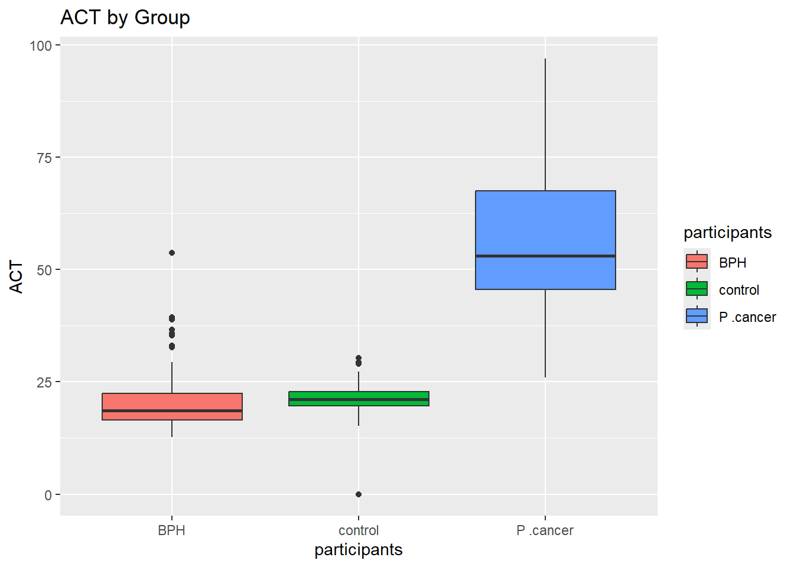
ggplot(data_1_final, aes(x = participants, y = `P. size`, fill = participants)) +
geom_boxplot() +
labs(title = "P.size by Group", x = "participants", y = "P. size")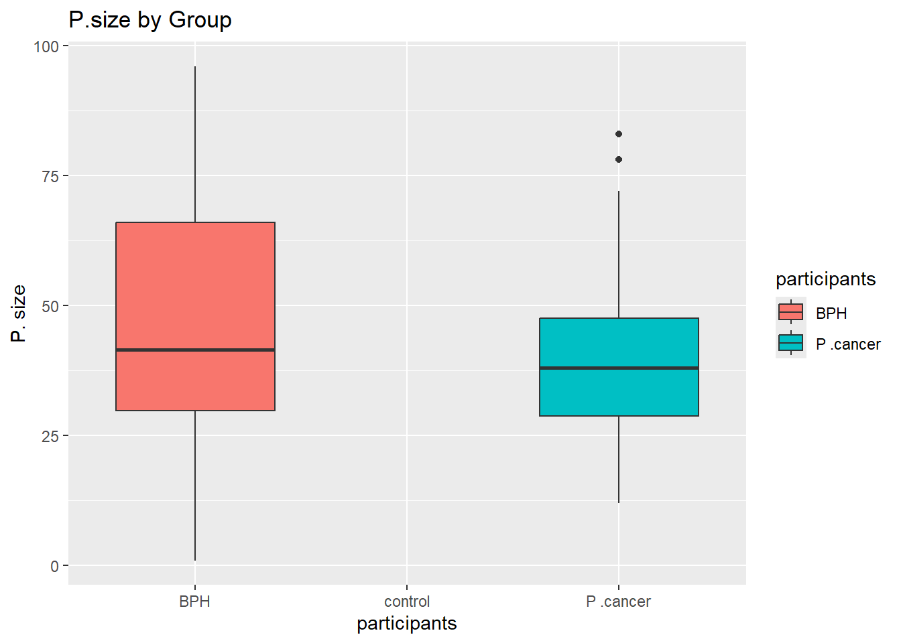
# Scatter plot of age vs PSA, fPSA, and cPSA
ggplot(data_1_final, aes(x = age, y = `PSA ng/ml`, color = participants)) +
geom_point() +
labs(title = "Age vs PSA", x = "Age", y = "PSA (ng/ml)")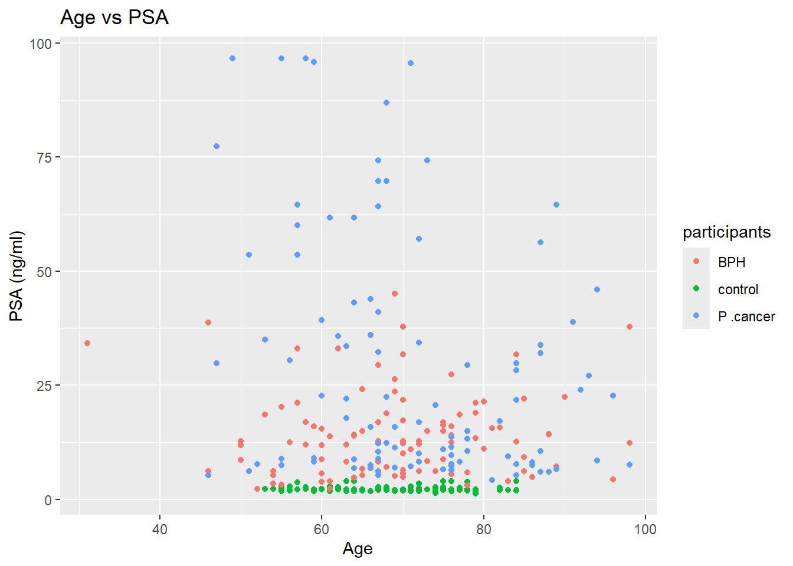
ggplot(data_1_final, aes(x = age, y = `fPSA ng/ml`, color = participants)) +
geom_point() +
labs(title = "Age vs fPSA", x = "Age", y = "fPSA (ng/ml)")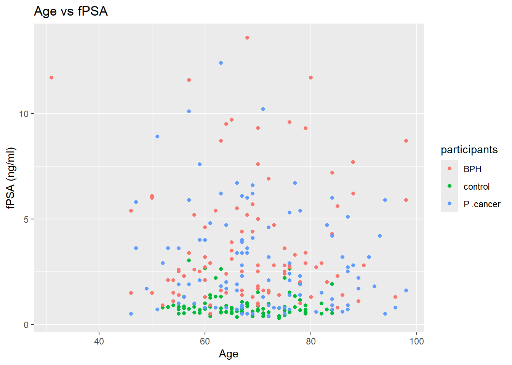
ggplot(data_1_final, aes(x = age, y = `cPSA ng/ml`, color = participants)) +
geom_point() +
labs(title = "Age vs cPSA", x = "Age", y = "cPSA (ng/ml)")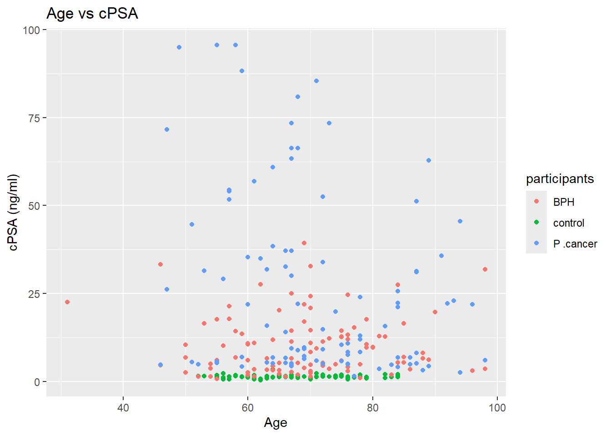
sessionInfo()R version 4.3.3 (2024-02-29 ucrt)
Platform: x86_64-w64-mingw32/x64 (64-bit)
Running under: Windows 10 x64 (build 19045)
Matrix products: default
locale:
[1] LC_COLLATE=English_United States.utf8
[2] LC_CTYPE=English_United States.utf8
[3] LC_MONETARY=English_United States.utf8
[4] LC_NUMERIC=C
[5] LC_TIME=English_United States.utf8
time zone: Africa/Johannesburg
tzcode source: internal
attached base packages:
[1] stats graphics grDevices utils datasets methods base
other attached packages:
[1] heatmaply_1.5.0 plotly_4.10.4 viridis_0.6.5 viridisLite_0.4.2
[5] tidyr_1.3.1 Rtsne_0.17 irlba_2.3.5.1 Matrix_1.6-5
[9] pheatmap_1.0.12 factoextra_1.0.7 cluster_2.1.6 corrplot_0.92
[13] ggplot2_3.5.1 dplyr_1.1.4 readxl_1.4.3
loaded via a namespace (and not attached):
[1] tidyselect_1.2.1 farver_2.1.2 fastmap_1.2.0 TSP_1.2-4
[5] lazyeval_0.2.2 promises_1.3.0 digest_0.6.36 lifecycle_1.0.4
[9] magrittr_2.0.3 compiler_4.3.3 rlang_1.1.4 sass_0.4.9
[13] tools_4.3.3 utf8_1.2.4 yaml_2.3.8 data.table_1.15.4
[17] knitr_1.48 labeling_0.4.3 htmlwidgets_1.6.4 plyr_1.8.9
[21] RColorBrewer_1.1-3 registry_0.5-1 ca_0.71.1 workflowr_1.7.1
[25] withr_3.0.1 purrr_1.0.2 grid_4.3.3 fansi_1.0.6
[29] git2r_0.33.0 colorspace_2.1-1 scales_1.3.0 iterators_1.0.14
[33] cli_3.6.2 rmarkdown_2.27 generics_0.1.3 rstudioapi_0.16.0
[37] httr_1.4.7 reshape2_1.4.4 cachem_1.1.0 stringr_1.5.1
[41] splines_4.3.3 assertthat_0.2.1 cellranger_1.1.0 vctrs_0.6.5
[45] webshot_0.5.5 jsonlite_1.8.8 seriation_1.5.6 ggrepel_0.9.5
[49] crosstalk_1.2.1 dendextend_1.17.1 foreach_1.5.2 jquerylib_0.1.4
[53] glue_1.7.0 codetools_0.2-20 stringi_1.8.4 gtable_0.3.5
[57] later_1.3.2 munsell_0.5.1 tibble_3.2.1 pillar_1.9.0
[61] htmltools_0.5.8.1 R6_2.5.1 rprojroot_2.0.4 evaluate_0.24.0
[65] lattice_0.22-6 highr_0.11 httpuv_1.6.15 bslib_0.8.0
[69] Rcpp_1.0.12 gridExtra_2.3 nlme_3.1-165 mgcv_1.9-1
[73] whisker_0.4.1 xfun_0.46 fs_1.6.4 pkgconfig_2.0.3